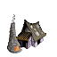
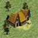
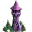
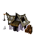

| Bezeichnung | | Steine | Holz | Eisen | Stadt-
gebäude | Abschaltbar |
|
| Hafen | | 0 | 0 | 0 | Nein | - |
|
| Holztor (Nord/Süd) | | 0 | 500 | 0 | Nein | - |
|
| Holztor (Ost/West) | | 0 | 500 | 0 | Nein | - |
|
 | Wohnhaus | | 0 | 0 | 0 | Nein | - |
|
| Steintor (Nord/Süd) | | 1000 | 500 | 0 | Nein | - |
|
| Steintor (Ost/West) | | 1000 | 500 | 0 | Nein | - |
|
 | Pumpe | | 500 | 500 | 0 | Nein | - |
|
| Fischerhütte | | 500 | 500 | 0 | Nein | - |
|
 | Bauernhof | Bauernhöfe produzieren Nahrung und Tiere
Der Ertrag ist abhängig von der Pflanzenkunde des Betreibers und dem Ertragswert des Feldes, wo der Bauernhof errichtet wird. | 125 | 375 | 0 | Nein | - |
|
 | Holzfällerhütte | Holzfällerhütten produzieren Holz
Der Ertrag ist abhängig von der Holzbearbeitung des Betreibers und dem Ertragswert des Feldes, wo die Holzfällerhütte errichtet wird. | 0 | 100 | 0 | Nein | - |
|
 | Jagdhütte | Jagdhütten produzieren Fleisch
Der Ertrag ist abhängig von den Wildnisfertigkeiten des Betreibers und dem Ertragswert des Feldes, wo die Jagdhütte errichtet wird. | 0 | 100 | 0 | Nein | - |
|
 | Steinbruch | Steinbrüche produzieren Steine
Der Ertrag ist abhängig von der Steinbearbeitung des Betreibers und dem Ertragswert des Feldes, wo der Steinbruch errichtet wird. | 0 | 250 | 0 | Nein | - |
|
 | Erzmine | Erzminen produzieren Erz
Der Ertrag ist abhängig von der Steinbearbeitung des Betreibers und dem Ertragswert des Feldes, wo die Erzmine errichtet wird. | 0 | 250 | 0 | Nein | - |
|
 | Handelsposten | Handelsposten kaufen und verkaufen Güter
Handelsposten dienen dem Handel mit anderen Spielern
Preise für An-/ und Verkauf können vom Besitzer festgelegt werden. Der Besitzer kann Lagerräume erweitern, den Schutz verbessern und verschiedene Ausbauten erwerben. | 125 | 500 | 0 | Nein | - |
|
 | Turm | Türme können anderen Gruppen das Passieren erlauben oder verbieten (je nach Beziehung)
WARNUNG:
Verursacht ein Turm ein öffentliches Ärgernis, kann er versetzt, oder bei ersichtlicher boshafter Absicht abgebrannt werden (Blockieren des Tempels, Newbieinsel u.ä.) | 500 | 500 | 25 | Nein | - |
|
|  | Schmiede | Schmieden produzieren Werkzeug oder spezielle Gegenstände, die nicht in Städten verkauft werden. Verbraucht werden Holz und Eisen | 125 | 375 | 0 | Nein | - |
|
 | Goldmine | Goldminen produzieren Gold
Der Ertrag ist abhängig von der Steinbearbeitung des Betreibers und dem Ertragswert des Feldes, wo die Goldmine errichtet wird | 0 | 250 | 0 | Nein | - |
|
|  | Gasthaus | In Gasthäusern kann man schlafen und sich erholen | 125 | 375 | 0 | Nein | - |
|
| Brauhaus | Hier wird aus Hopfen das allseits beliebte Bier gebraut | 125 | 375 | 0 | Nein | - |
|
 | Bäckerei | Bäckereien produzieren aus Getreide Brot | 125 | 375 | 0 | Nein | - |
|
| Baustelle | Hier wird irgendetwas gebaut. Nähere Informationen in der Beschreibung... | 0 | 0 | 0 | Nein | - |
|
|  | Magierturm | Hier werden Tränke hergestellt und magische Sprüche erforscht | 500 | 500 | 50 | Nein | - |
|
 | Hafen | Hier können Schiffe erworben werden | 0 | 0 | 0 | Nein | - |
|
| Höhle | - | 0 | 0 | 0 | Nein | - |
|
| Ruine | - | 0 | 0 | 0 | Nein | - |
|
| Tempel | - | 0 | 0 | 0 | Nein | - |
|
| Heiligtum | - | 0 | 0 | 0 | Nein | - |
|
| Burg | Burgen schützen Gebäude im umgebenden Gebiet vor Plünderungen und Brandschatzungen. In einer Burg können mehrere Leute stationiert werden. Leute in der Burg kosten während ihres Aufenthaltes pro Tag 6 Bier, 6 Brot, 6 Gold und 6 Fleisch. Der Unterhalt kann auch durch beschützte Spieler geleistet werden. | 3000 | 1500 | 100 | Nein | - |
|
 | Kultstätte | | 2000 | 2000 | 0 | Nein | - |
|
| Universität | | 2000 | 2000 | 0 | Nein | - |
|
| Palast | | 2000 | 2000 | 0 | Nein | - |
|
| Zirkus | | 5000 | 5000 | 0 | Nein | - |
|
 | Forum | | 5000 | 5000 | 0 | Nein | - |
|
| Kampfschule | Stadt | 2000 | 2000 | 0 | Ja | Nein |
|
 | Ziegelei | Stadt | 500 | 500 | 0 | Ja | Ja |
|
| Magierakademie | Stadt | 2000 | 2000 | 0 | Ja | Nein |
|
 | Magistratur | Stadt | 20000 | 20000 | 5000 | Ja | Ja |
|
| Theater | Stadt | 10000 | 10000 | 0 | Ja | Ja |
|
 | Kaserne | Stadt | 1000 | 1000 | 0 | Ja | Nein |
|
 | Sägewerk | Stadt | 500 | 500 | 0 | Ja | Ja |
|
| Diebesgilde | Stadt | 2000 | 2000 | 0 | Ja | Nein |
|
 | Gerberei | Stadt | 500 | 500 | 0 | Ja | Ja |
|
| Weberei | Stadt | 500 | 500 | 0 | Ja | Ja |
|
| Taverne | Stadt | 500 | 500 | 0 | Ja | Ja |
|
|  | Lagerhaus | Stadt | 500 | 500 | 0 | Ja | Nein |
|
 | Handwerkerausbildung | Stadt | 2000 | 2000 | 0 | Ja | Nein |
|
 | Arena | Stadt | 5000 | 5000 | 0 | Ja | Ja |
|
 | Rathaus | | 0 | 0 | 0 | Ja | Nein |
|
 | Markt | Stadt | 5000 | 20000 | 5000 | Ja | Ja |
|
| Siechenhaus | Stadt | 20000 | 5000 | 5000 | Ja | Ja |